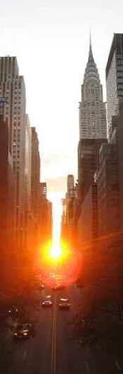

Manhattanhenge — sometimes referred to as the Manhattan Solstice — is an event during which the setting sun is aligned with the east–west streets of the main street grid of Manhattan, New York City. This occurs twice a year, on dates evenly spaced around the summer solstice. The first Manhattanhenge occurs around May 28, while the second occurs around July 12.
The term "Manhattanhenge" was popularized by Neil deGrasse Tyson, an astrophysicist at the American Museum of Natural History and a native New Yorker. It is a reference to Stonehenge, a prehistoric monument located in Wiltshire, England, which was constructed so that the rising sun, seen from the center of the monument at the time of the summer solstice, aligns with the outer "Heel Stone".